先分清楚：天氣＝短時間的大氣狀態；氣候＝長時間的平均狀態。
(A) 風雨交加，是「現在這段時間」的樣子 → 天氣 ✔。
(B) 基隆「雨港」、(C) 竹風蘭雨（新竹多風、宜蘭多雨）、(D) 冬暖夏涼，都是長年的特色 → 氣候。
📌 判斷法：這句話明年還成立嗎？成立＝氣候，只講今天＝天氣。課本 p.62、p.66
(D) 兩地氣壓差愈大，風速愈大 → 課本原句 ✔。
(A) 高山症是高山氣壓太低，不是氣溫太低；(B) 冷空氣下沉形成的是高氣壓 H，不是低氣壓；(C) 5、6 月的梅雨是鋒面雨，不是對流雨。
📌 一組配對要背熟：冷→下沉→高壓 H→晴；熱→上升→低壓 L→雨。課本 p.63–65
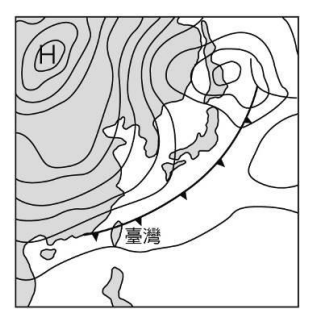
看天氣圖：左上角有很強的高氣壓 H（西伯利亞冷高壓），一條只有三角形符號的冷鋒正在通過臺灣。
這是冬天冷空氣南下的樣子：吹東北風、氣溫驟降、魚可能凍死 → (A)(B)(C) 都可能出現。
(D) 滯留鋒的符號是三角形和半圓形交錯，圖上沒有；而且滯留鋒是 5、6 月梅雨季的事 → 最不可能 ✔。
📌 鋒面符號：只有三角＝冷鋒；三角半圓交錯＝滯留鋒。課本 p.65、p.72
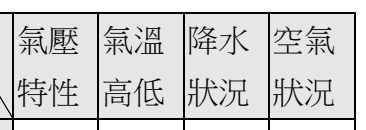
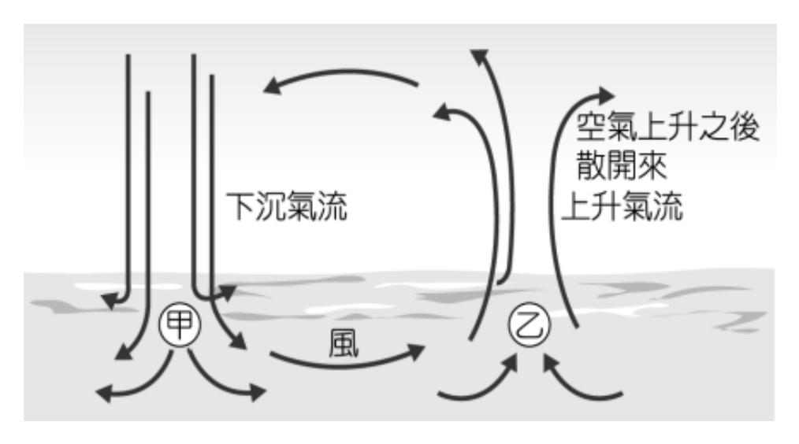
先讀圖：甲是下沉氣流，乙是上升氣流，風從甲吹向乙。
所以甲＝冷空氣下沉＝高氣壓、天氣晴；乙＝暖空氣上升＝低氣壓、容易下雨。
原卷表格寫的是：甲「低氣壓、冷空氣、降水、空氣膨脹」；乙「高氣壓、暖空氣、晴朗、空氣壓縮」。
只有氣溫高低那一欄（甲冷、乙暖）是對的 → (B) ✔；其他三欄甲乙都對調了。
📌 本站這題的附圖只裁到表格的標題列，甲、乙兩列的內容寫在上面這段。課本 p.64
(D) 氣溫會隨高度或緯度增加而遞減 → 課本原句 ✔。
(A) 水氣是遇冷凝結，不是遇熱；(B) 氣壓單位是百帕 hPa，題目寫成「Pha」；(C) 風向是風的來向，不是去向（東風＝從東邊吹來）。
📌 每個選項只藏一個小錯，要一個字一個字看。課本 p.62–65
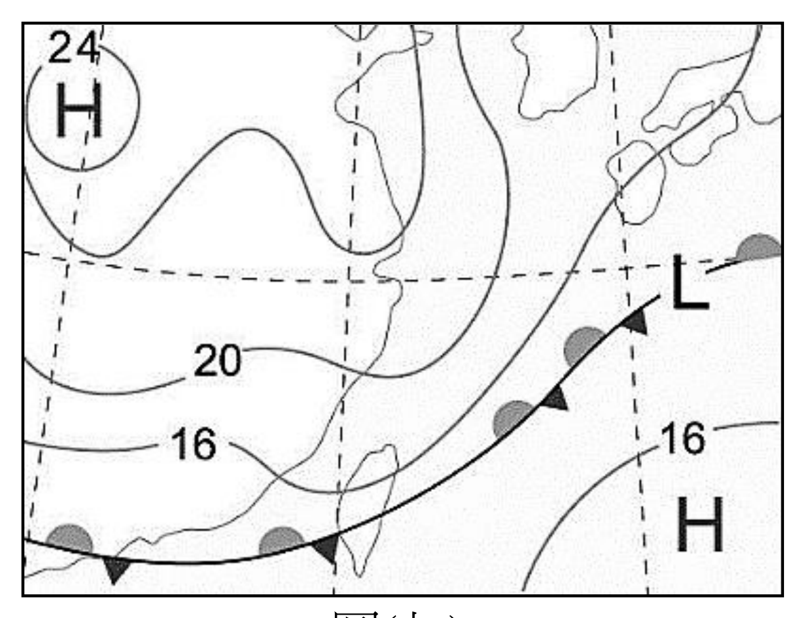
看圖(七)：一條鋒面橫過臺灣，線上的三角形和半圓形交錯、分別畫在兩側。
這是滯留鋒：冷暖空氣勢力差不多，鋒面停著不太動，所以會連續下雨 → (C) ✔。
(A) 午後雷陣雨是夏天的對流雨；(B) 圖上沒有颱風；(D) 冷氣團侵襲要看到強烈的冷鋒南下，這張圖畫的是停滯的鋒面。
📌 滯留鋒＝梅雨＝連續陰雨。課本 p.65、p.73
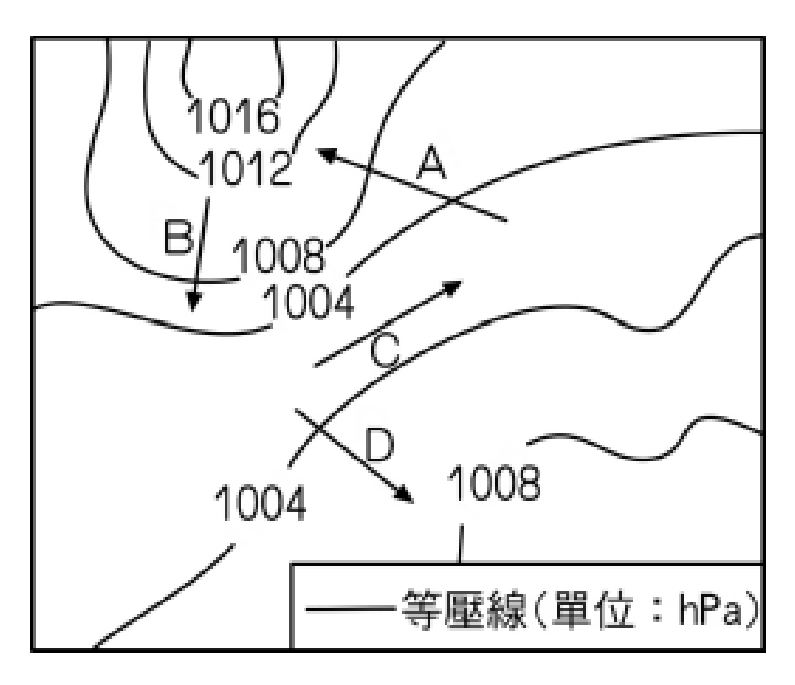
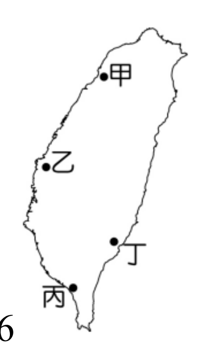
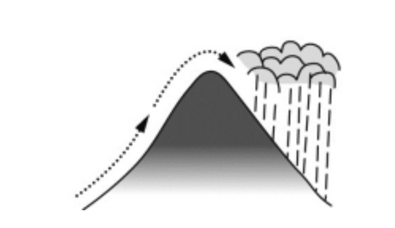
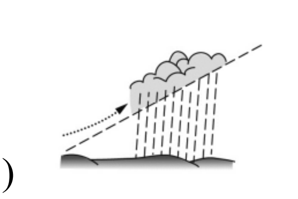
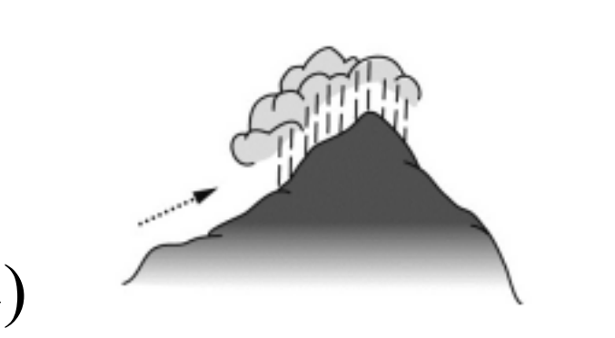
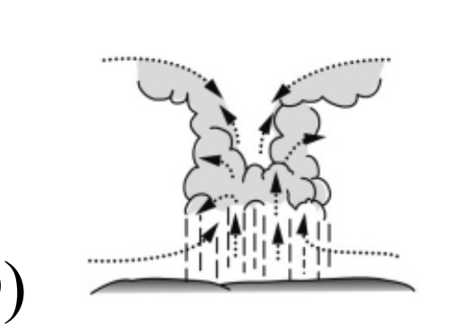
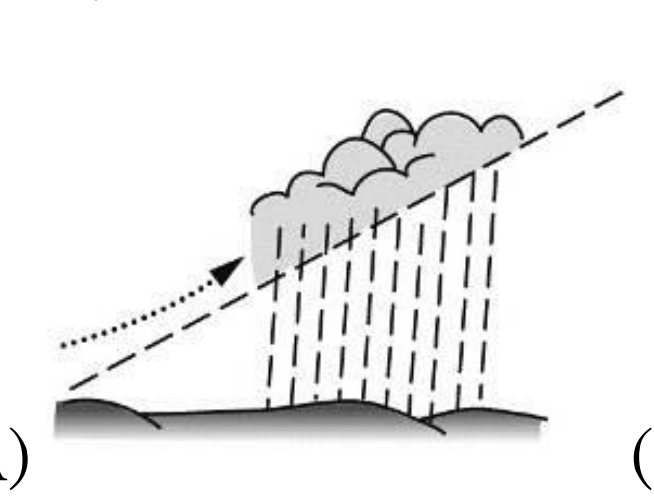
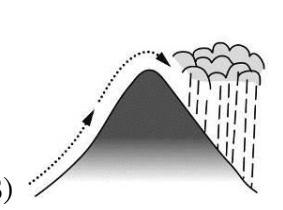
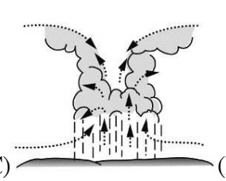
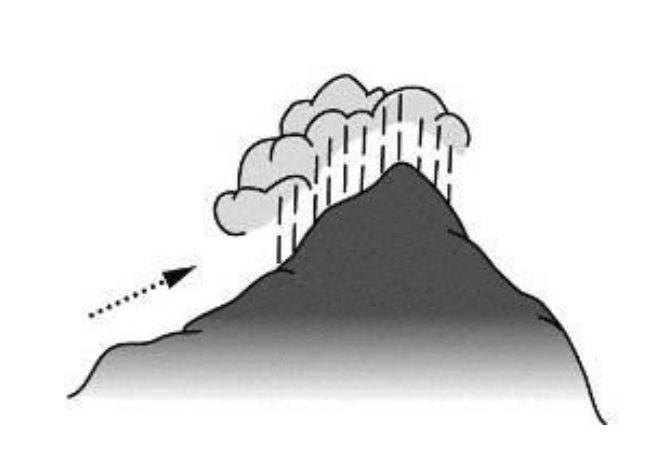
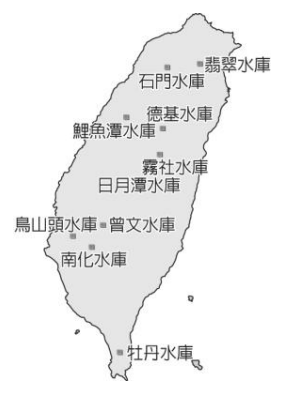